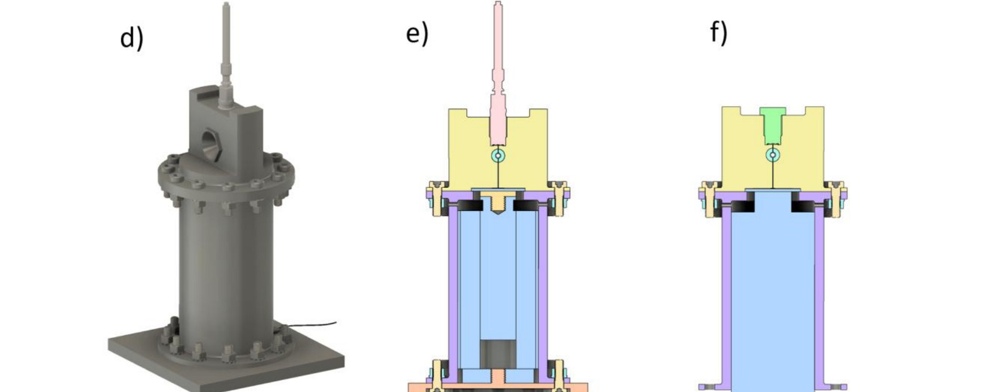
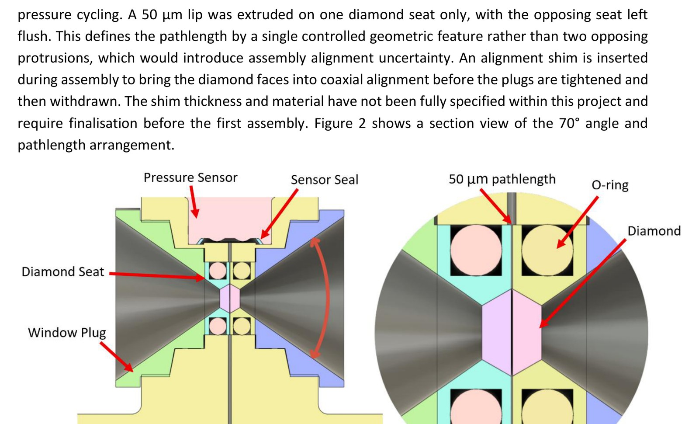
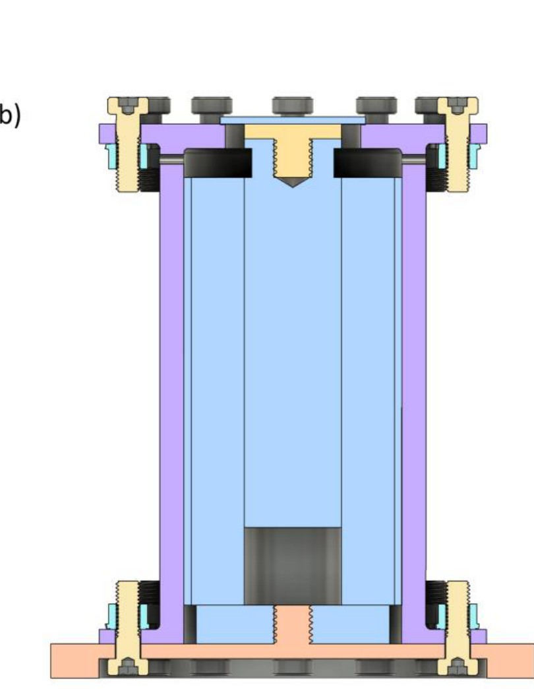
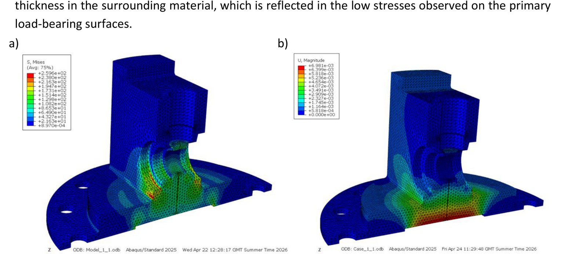
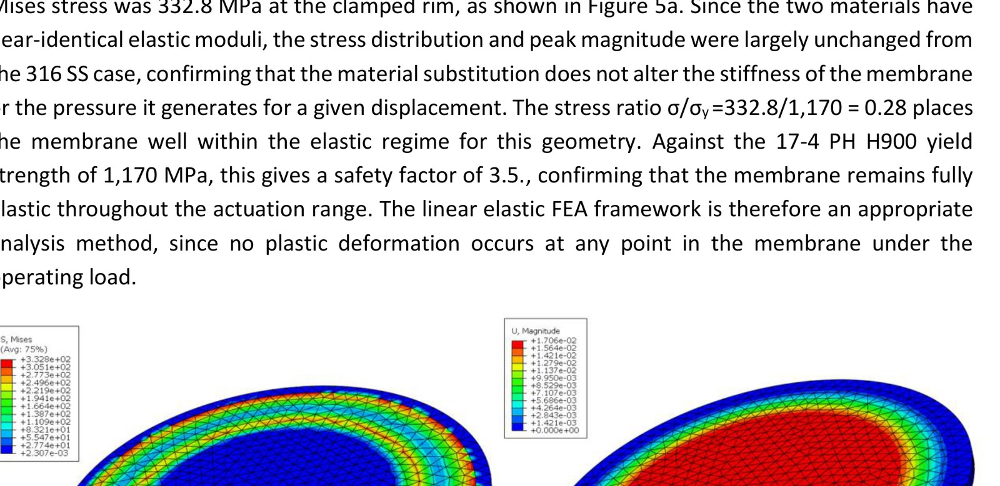

2026
Pressure-Jump Cell for Infrared Spectroscopy
Redesigning a sub-millisecond pressure-jump cell so it could be used for infrared spectroscopy rather than X-ray scattering, and proving the geometry would hold 1,000 bar before committing it to manufacture.

Redesigned pressure cell, actuator casing assembly
The problem
IPressure-jump spectroscopy watches molecules change in real time by applying a rapid change in hydrostatic pressure. The fastest existing cell, developed by Möller et al. in 2016, reaches sub-millisecond rise times, but it was built for X-ray scattering. Its geometry is wrong for infrared in two specific ways: the optical opening angle is around 20°, and the sample pathlength is 2 mm.
Infrared imposes the opposite requirements. Water absorbs strongly in the mid-infrared, so transmission needs a pathlength between 10 and 100 µm, and the collection optics need a wide symmetric opening rather than a narrow cone. An IR-compatible cell did exist, from Schiewek et al. in 2007, but solenoid valve actuation limited it to millisecond resolution, which rules out fast kinetics.
No instrument combined sub-millisecond piezoelectric actuation with IR-compatible optics. That gap was the project.
What was done
IIThe cell was modelled parametrically in Fusion 360 and revised iteratively as the structural analysis fed back into the geometry.
Optics
The opening angle was taken from roughly 20° to a full 70°, and the pathlength from 2 mm to 50 µm. The pathlength is set by a single 50 µm raised lip on one diamond seat, with the opposing seat left flush. Using one controlled feature rather than two opposing protrusions removes the assembly uncertainty that would otherwise stack across two independently machined parts.
Actuator
The first actuator chosen was wrong, and finding out why changed the design. The HPSt ring-type actuator had a convenient M32 thread that would have screwed straight into the body, but consultation with Piezosystem Jena established that the whole series is limited to 20,000 N blocked force. Generating 1,000 bar through a 20 mm pusher needs 31,416 N, exceeding it by 57%. The actuator was changed to the PSt 1000/35/80 VS45 at 50,000 N, which has no external thread, so a separate bolted cylindrical casing had to be designed around it.
Displacement
Treating the walls as rigid, 16.93 µm of actuator travel is needed to reach 1,000 bar in the 117 mm³ internal volume. In practice the actuator pushes against fluid stiffness of 1,856 N/µm, roughly three times its own stiffness at bipolar drive, so the effective displacement falls to 20.15 µm at bipolar and 14.55 µm at unipolar. Single-stage operation to 1,000 bar therefore works with a bipolar amplifier; unipolar drive reaches about 859 bar and needs a 141 bar hydraulic preload first.
Structural analysis
Lamé thick-wall estimates came first as a lower bound, then FEA in Abaqus CAE using second-order tetrahedral elements on a half model under 100 MPa internal pressure. A mesh convergence study took the global seed from 3 mm to 1 mm, and peak Von Mises stress fell from 461.7 MPa to 259.6 MPa, a 43.8% reduction. The downward trend confirmed the coarse-mesh figure was an element quality artefact rather than a real concentration. Stresses on the wetted internal surfaces ran between 68 and 196 MPa, agreeing with the 189.3 MPa Lamé estimate.
Membrane
This was where the analysis found a genuine problem. Under the required 16.93 µm displacement, peak stress at the clamped rim reached 387 MPa in 316 stainless, exceeding its 250 MPa yield by 55%, meaning plastic deformation on every actuation cycle and low-cycle fatigue failure. Switching to 17-4 PH stainless in the H900 condition, with near-identical elastic modulus so the stiffness is unchanged, gives a yield of 1,170 MPa and a safety factor of 3.5. That single material change was the fix.

Full assembly with section views, operating and testing configurations

Section through the cell showing the 70° opening and the 50 µm pathlength detail

Section through the actuator casing

Von Mises stress and displacement, cell body, 1 mm global seed

Von Mises stress and displacement, 17-4 PH membrane
An incidental finding
IIIThe Möller cell's practical ceiling of about 660 bar has generally been attributed to its design. Working through the numbers suggested otherwise: the force needed for 660 bar through their 25 mm pusher is 32,453 N, and their unipolar amplifier reduces the actuator's blocked force to roughly 30,000-35,000 N. The limit was the amplifier, not the structure. A bipolar amplifier would have taken the same mechanical design to around 1,540 bar.
Outcome and honest limits
IVBoth optical targets were achieved in the final geometry. The design was submitted to the university workshop for manufacture as a continuation activity, since machining was not feasible inside the project timeline.
What is not yet proven, and should be stated plainly:
- The pressure rise time cannot be confirmed analytically and needs measurement on a built cell.
- Sealing above 700 bar may require PTFE anti-extrusion backup rings, to be determined during proof testing.
- The alignment shim specification and the sample fill and preload procedure were not completed within the project.